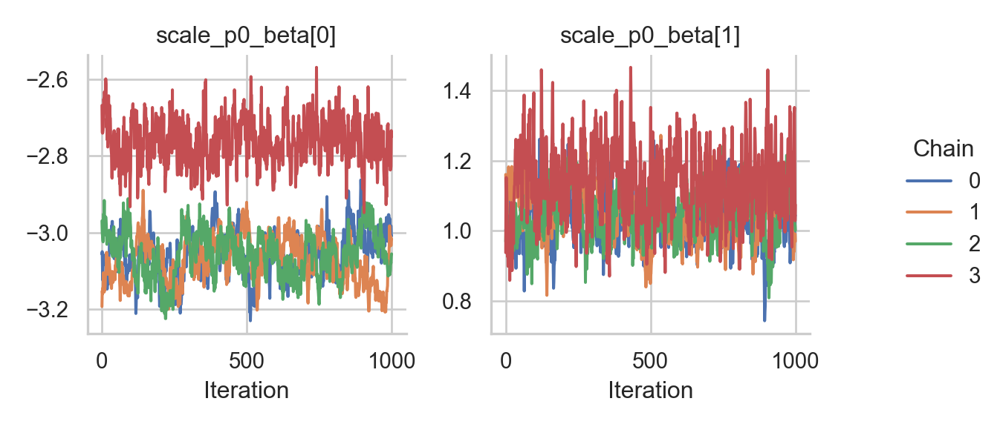
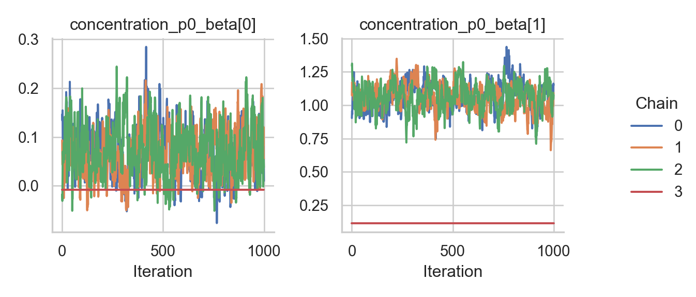
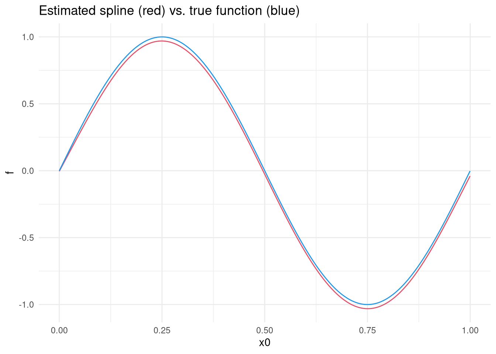

Chapter 4 GEV responses
In this tutorial, we illustrate how to set up a distributional regression model with the generalized extreme value distribution as a response distribution. First, we simulate some data in R:
- The location parameter (\(\mu\)) is a function of an intercept and a non-linear covariate effect.
- The scale parameter (\(\sigma\)) is a function of an intercept and a linear effect and uses a log-link.
- The shape or concentration parameter (\(\xi\)) is a function of an intercept and a linear effect.
After simulating the data, we can configure the model with a single call to the rliesel::liesel() function.
library(rliesel)## Please set your Liesel venv, e.g. with use_liesel_venv()library(VGAM)## Loading required package: stats4## Loading required package: splinesuse_liesel_venv()## [1] "/home/hannes/.local/share/virtualenvs/liesel-tutorials-1k9wp3mI"set.seed(1337)
n <- 1000
x0 <- runif(n)
x1 <- runif(n)
x2 <- runif(n)
y <- rgev(
n,
location = 0 + sin(2 * pi * x0),
scale = exp(-3 + x1),
shape = 0.1 + x2
)
plot(y)model <- liesel(
response = y,
distribution = "GeneralizedExtremeValue",
predictors = list(
loc = predictor(~ s(x0)),
scale = predictor(~ x1, inverse_link = "Exp"),
concentration = predictor(~ x2)
)
)Now, we can continue in Python and use the lsl.dist_reg_mcmc() function to set up a sampling algorithm with IWLS kernels for the regression coefficients (\(\boldsymbol{\beta}\)) and a Gibbs kernel for the smoothing parameter (\(\tau^2\)) of the spline. Note that we need to set \(\beta_0\) for \(\xi\) to 0.1 manually, because \(\xi = 0\) breaks the sampler.
import liesel.liesel as lsl
import jax.numpy as jnp
model = r.model
# concentration = 0 seems to break the sampler
model.nodes["concentration_p0_beta"].value = jnp.array([0.1, 0.0])
builder = lsl.dist_reg_mcmc(model, seed=42, num_chains=4)
builder.set_duration(warmup_duration=1000, posterior_duration=1000)
engine = builder.build()
engine.sample_all_epochs()## INFO - Starting epoch: FAST_ADAPTATION, 75 transitions, 25 jitted together
## WARNING - Errors per chain for kernel_03: 0, 0, 1, 0 / 75 transitions
## WARNING - Errors per chain for kernel_04: 5, 7, 2, 18 / 75 transitions
## INFO - Finished epoch
## INFO - Starting epoch: SLOW_ADAPTATION, 25 transitions, 25 jitted together
## WARNING - Errors per chain for kernel_00: 1, 1, 1, 0 / 25 transitions
## WARNING - Errors per chain for kernel_02: 1, 1, 2, 1 / 25 transitions
## WARNING - Errors per chain for kernel_03: 1, 1, 1, 0 / 25 transitions
## WARNING - Errors per chain for kernel_04: 2, 3, 1, 5 / 25 transitions
## INFO - Finished epoch
## INFO - Starting epoch: SLOW_ADAPTATION, 50 transitions, 25 jitted together
## WARNING - Errors per chain for kernel_00: 0, 1, 1, 0 / 50 transitions
## WARNING - Errors per chain for kernel_02: 1, 1, 1, 0 / 50 transitions
## WARNING - Errors per chain for kernel_03: 1, 1, 0, 0 / 50 transitions
## WARNING - Errors per chain for kernel_04: 2, 0, 3, 18 / 50 transitions
## INFO - Finished epoch
## INFO - Starting epoch: SLOW_ADAPTATION, 100 transitions, 25 jitted together
## WARNING - Errors per chain for kernel_00: 0, 1, 0, 0 / 100 transitions
## WARNING - Errors per chain for kernel_02: 1, 0, 1, 1 / 100 transitions
## WARNING - Errors per chain for kernel_03: 2, 2, 1, 0 / 100 transitions
## WARNING - Errors per chain for kernel_04: 1, 1, 2, 38 / 100 transitions
## INFO - Finished epoch
## INFO - Starting epoch: SLOW_ADAPTATION, 200 transitions, 25 jitted together
## WARNING - Errors per chain for kernel_00: 1, 0, 0, 0 / 200 transitions
## WARNING - Errors per chain for kernel_02: 0, 1, 1, 1 / 200 transitions
## WARNING - Errors per chain for kernel_03: 1, 0, 1, 0 / 200 transitions
## WARNING - Errors per chain for kernel_04: 2, 1, 3, 126 / 200 transitions
## INFO - Finished epoch
## INFO - Starting epoch: SLOW_ADAPTATION, 500 transitions, 25 jitted together
## WARNING - Errors per chain for kernel_00: 2, 2, 1, 0 / 500 transitions
## WARNING - Errors per chain for kernel_02: 2, 1, 1, 1 / 500 transitions
## WARNING - Errors per chain for kernel_03: 0, 1, 1, 1 / 500 transitions
## WARNING - Errors per chain for kernel_04: 0, 2, 1, 500 / 500 transitions
## INFO - Finished epoch
## INFO - Starting epoch: FAST_ADAPTATION, 50 transitions, 25 jitted together
## WARNING - Errors per chain for kernel_00: 2, 1, 1, 0 / 50 transitions
## WARNING - Errors per chain for kernel_02: 1, 1, 1, 1 / 50 transitions
## WARNING - Errors per chain for kernel_03: 1, 0, 1, 0 / 50 transitions
## WARNING - Errors per chain for kernel_04: 1, 1, 3, 50 / 50 transitions
## INFO - Finished epoch
## INFO - Finished warmup
## INFO - Starting epoch: POSTERIOR, 1000 transitions, 25 jitted together
## WARNING - Errors per chain for kernel_04: 1, 2, 0, 1000 / 1000 transitions
## INFO - Finished epochSome tabular summary statistics of the posterior samples:
import liesel.goose as gs
results = engine.get_results()
summary = gs.summary(results)
summary.loc["loc_p0_beta"]| param_index | chain_index | num_samples | num_effective | mean | sd | rhat | q_5 | q_50 | q_95 | hdi_90_low | hdi_90_high | |
|---|---|---|---|---|---|---|---|---|---|---|---|---|
| loc_p0_beta | 0 | 0 | 1000 | 26.531 | 0.028 | 0.002 | 1.542 | 0.024 | 0.027 | 0.032 | 0.024 | 0.031 |
| loc_p0_beta | 0 | 1 | 1000 | 27.658 | 0.027 | 0.003 | 1.542 | 0.023 | 0.027 | 0.032 | 0.023 | 0.032 |
| loc_p0_beta | 0 | 2 | 1000 | 28.051 | 0.028 | 0.003 | 1.542 | 0.023 | 0.028 | 0.032 | 0.023 | 0.032 |
| loc_p0_beta | 0 | 3 | 1000 | 199.347 | 0.047 | 0.003 | 1.542 | 0.042 | 0.047 | 0.053 | 0.042 | 0.053 |
summary.loc["loc_np0_tau2"]| param_index | chain_index | num_samples | num_effective | mean | sd | rhat | q_5 | q_50 | q_95 | hdi_90_low | hdi_90_high | |
|---|---|---|---|---|---|---|---|---|---|---|---|---|
| loc_np0_tau2 | 0 | 0 | 1000 | 980.45 | 6.375 | 4.106 | 1 | 2.482 | 5.154 | 14.119 | 1.988 | 11.363 |
| loc_np0_tau2 | 0 | 1 | 1000 | 790.053 | 6.412 | 4.762 | 1 | 2.565 | 5.135 | 14.411 | 1.712 | 11.049 |
| loc_np0_tau2 | 0 | 2 | 1000 | 1018.208 | 6.4 | 4.254 | 1 | 2.45 | 5.093 | 14.623 | 1.919 | 11.254 |
| loc_np0_tau2 | 0 | 3 | 1000 | 857.694 | 6.329 | 4.127 | 1 | 2.364 | 5.311 | 13.369 | 1.86 | 11.137 |
summary.loc["scale_p0_beta"]| param_index | chain_index | num_samples | num_effective | mean | sd | rhat | q_5 | q_50 | q_95 | hdi_90_low | hdi_90_high | |
|---|---|---|---|---|---|---|---|---|---|---|---|---|
| scale_p0_beta | 0 | 0 | 1000 | 37.492 | -3.056 | 0.057 | 1.54 | -3.151 | -3.057 | -2.96 | -3.155 | -2.964 |
| scale_p0_beta | 0 | 1 | 1000 | 26.541 | -3.073 | 0.059 | 1.54 | -3.166 | -3.072 | -2.98 | -3.167 | -2.982 |
| scale_p0_beta | 0 | 2 | 1000 | 26.131 | -3.058 | 0.06 | 1.54 | -3.158 | -3.055 | -2.962 | -3.159 | -2.964 |
| scale_p0_beta | 0 | 3 | 1000 | 171.607 | -2.762 | 0.06 | 1.54 | -2.857 | -2.762 | -2.667 | -2.86 | -2.671 |
| scale_p0_beta | 1 | 0 | 1000 | 56.575 | 1.035 | 0.073 | 1.117 | 0.927 | 1.032 | 1.163 | 0.927 | 1.161 |
| scale_p0_beta | 1 | 1 | 1000 | 40.554 | 1.053 | 0.072 | 1.117 | 0.936 | 1.056 | 1.166 | 0.935 | 1.164 |
| scale_p0_beta | 1 | 2 | 1000 | 44.969 | 1.046 | 0.069 | 1.117 | 0.933 | 1.044 | 1.163 | 0.929 | 1.156 |
| scale_p0_beta | 1 | 3 | 1000 | 210.801 | 1.136 | 0.104 | 1.117 | 0.97 | 1.135 | 1.311 | 0.96 | 1.296 |
summary.loc["concentration_p0_beta"]| param_index | chain_index | num_samples | num_effective | mean | sd | rhat | q_5 | q_50 | q_95 | hdi_90_low | hdi_90_high | |
|---|---|---|---|---|---|---|---|---|---|---|---|---|
| concentration_p0_beta | 0 | 0 | 1000 | 41.774 | 0.072 | 0.051 | 1.296 | -0.009 | 0.07 | 0.157 | -0.011 | 0.154 |
| concentration_p0_beta | 0 | 1 | 1000 | 63.098 | 0.065 | 0.045 | 1.296 | -0.005 | 0.064 | 0.138 | -0.008 | 0.134 |
| concentration_p0_beta | 0 | 2 | 1000 | 86.359 | 0.073 | 0.053 | 1.296 | -0.01 | 0.069 | 0.169 | -0.008 | 0.171 |
| concentration_p0_beta | 0 | 3 | 1000 | 1000 | -0.008 | 0 | 1.296 | -0.008 | -0.008 | -0.008 | -0.008 | -0.008 |
| concentration_p0_beta | 1 | 0 | 1000 | 41.036 | 1.066 | 0.101 | 1.542 | 0.911 | 1.064 | 1.235 | 0.912 | 1.236 |
| concentration_p0_beta | 1 | 1 | 1000 | 28.795 | 1.06 | 0.094 | 1.542 | 0.904 | 1.065 | 1.208 | 0.898 | 1.2 |
| concentration_p0_beta | 1 | 2 | 1000 | 82.599 | 1.067 | 0.101 | 1.542 | 0.904 | 1.074 | 1.224 | 0.897 | 1.215 |
| concentration_p0_beta | 1 | 3 | 1000 | 1000 | 0.116 | 0 | 1.542 | 0.116 | 0.116 | 0.116 | 0.116 | 0.116 |
And the corresponding trace plots:
fig = gs.plot_trace(results, "loc_p0_beta")fig = gs.plot_trace(results, "loc_np0_tau2")fig = gs.plot_trace(results, "loc_np0_beta")fig = gs.plot_trace(results, "scale_p0_beta")
fig = gs.plot_trace(results, "concentration_p0_beta")
We need to reset the index of the summary data frame before we can transfer it to R.
summary = summary.reset_index()After transferring the summary data frame to R, we can process it with packages like dplyr and ggplot2. Here is a visualization of the estimated spline vs. the true function:
library(dplyr)##
## Attaching package: 'dplyr'## The following objects are masked from 'package:stats':
##
## filter, lag## The following objects are masked from 'package:base':
##
## intersect, setdiff, setequal, unionlibrary(ggplot2)
library(reticulate)
summary <- py$summary
beta <- summary %>%
filter(index == "loc_np0_beta") %>%
group_by(param_index) %>%
summarize(mean = mean(mean)) %>%
ungroup()
beta <- beta$mean
X <- py_to_r(model$nodes$loc_np0_X$value)
estimate <- X %*% beta
true <- sin(2 * pi * x0)
ggplot(data.frame(x0 = x0, estimate = estimate, true = true)) +
geom_line(aes(x0, estimate), color = palette()[2]) +
geom_line(aes(x0, true), color = palette()[4]) +
ggtitle("Estimated spline (red) vs. true function (blue)") +
ylab("f") +
theme_minimal()